2群の比較：t 検定
Comparing two groups with the t-test
ノコギリモク (Sargassum macrocarpum) は褐藻類ホンダワラ属の海藻です。 通年藻場を形成する海藻であり、海洋動物の住処、餌場、炭素固定の場として機能しています。 かつて、九州に広く分布していましたが、温暖化に伴う環境変動と食害によって、局地的に絶滅しています。 ここでは、ノコギリモクの幼体を資料として、2軍における解析手法を紹介します。
では、地点 A と B のノコギリモク幼体の幅は Table 1 の通りです。 各地点から合計６個体採取しました。
Sample | Site A | Site B |
1 | 19.9 | 22.3 |
2 | 20.6 | 22.9 |
3 | 20.3 | 22.0 |
4 | 20.4 | 23.7 |
5 | 20.9 | 20.9 |
6 | 18.1 | 21.7 |
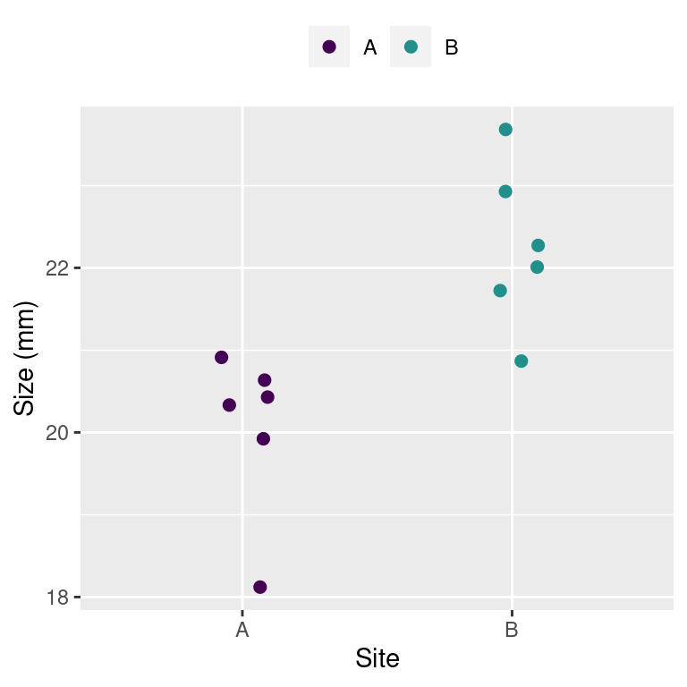
Site |
|
| s.e. |
A | 20.0 | 1.003 | 0.410 |
B | 22.2 | 0.971 | 0.396 |
作業仮説を考えましょう
すべての研究は作業仮説 から始まります。
今回の例について、作業仮説は 「地点毎に対するノコギリモク幼体の幅は異なる」にしました。
帰無仮説有意生検定が必要とする仮説を決めます
作業仮説を定義したら、つぎは検定のための仮説を定義します。 帰無仮説有意性検定 2
H_0 (null hypothesis 帰無仮説): 平均値に違いはない (\mu_{A} = \mu_{B})
H_A (alternative hypothesis 対立仮設): 平均値は異なる (\mu_{A} \neq \mu_{B})
つぎのような対立仮説も思いつきます。
- H_P (対立仮設): \mu_A > \mu_B
- H_N (対立仮設): \mu_A < \mu_B
帰無仮説と対立仮説はいくらでも考えられますが、 \mu_A = \mu_B は一般的な帰無仮説です。 そして、\mu_A \neq \mu_B も一般的な対立仮説です。
ナイーブ 3 な解析手法
地点 A と B のノコギリモクの大きさの違いが知りたいです。 では、地点同士の大きさの違いを求めます。 地点 A と B の平均値の差を求めてみます。
\overline{x_A} - \overline{x_B} = -2.22 地点 B のノコギリモクが大きいです。 でも、この大きさはどの程度信用できるかがわかりません。 平均値の差の制度を評価するには、標準誤差 4 を求めないといけないです。 この手法だと、標準誤差は求められません。
では、かく地点のサンプル番号ごとの差をとってみます。 この場合、 6 つの差を求められます。 6 つあるので、平均値、標準偏差、標準誤差も求められます。
Sample | Site A | Site B | Difference |
1 | 19.9 | 22.3 | 19.90 - 22.30 = -2.40 |
2 | 20.6 | 22.9 | 20.60 - 22.90 = -2.30 |
3 | 20.3 | 22.0 | 20.30 - 22.00 = -1.70 |
4 | 20.4 | 23.7 | 20.40 - 23.70 = -3.30 |
5 | 20.9 | 20.9 | 20.90 - 20.90 = 0.00 |
6 | 18.1 | 21.7 | 18.10 - 21.70 = -3.60 |
- \overline{x} = -2.2
- s = 1.3
- \text{s.e.} = 0.53
問題は、この差の平均値をどのように評価するのか。
平均値の分布
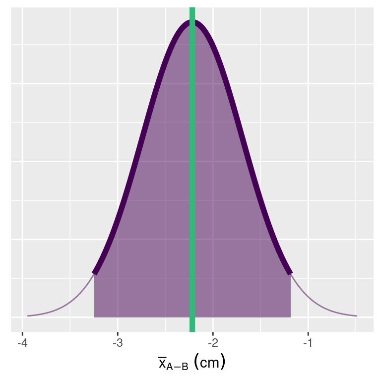
[l, u] の区間を定義したとき、l は区間の下限、u は区間の上限です。 このように定義した区間は信頼区間といいます。
では、x に対する区間 [l,u] は 1-\alpha の確率で次のように定義できます。
P(l \le x \le u) = 1-\alpha
\overline{x} が標本平均であれば、z値 9と呼ぶ統計量を定義できます。
z = \frac{\overline{x}-\mu}{\sigma}
\mu は母平均、\sigma は母分散です。
つまり、下限と上限を求めるためには
P(l \le z \le u) = 1-\alpha
を解けばいい。
中心極限定理は次の通りに定義されています。
\lim_{n\rightarrow\infty} \sqrt{n}\overbrace{\left(\frac{\overline{x}_n-\mu}{\sigma}\right)}^\text{この部分は z 値} \xrightarrow{d} N(0, 1)
よって、 \alpha = 0.05 のときの [l, u] は次の通りです。
P\left(l \le z \le u \right) = 1-0.05 = 0.95
標準化正規分布 N(0,1) のとき、
- \alpha/2=0.05/2=0.025 分位数は l です。
- 1-\alpha/2=1-0.05/2=0.975 分位数は u です。
z 値の分位数を求める
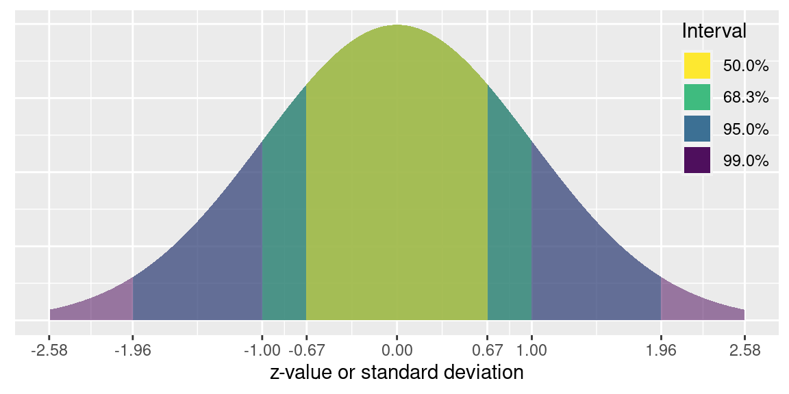
- [-1 s, 1 s] は 68.3% 区間
- [-2 s, 2 s] は 95.4% 区間
- [-3 s, 3 s] は 99.7% 区間
Signififance level | percent | ± quantile |
0.50000000000 | 50.00000 | 0.6744898 |
0.31731050786 | 68.26895 | 1.0000000 |
0.20000000000 | 80.00000 | 1.2815516 |
0.10000000000 | 90.00000 | 1.6448536 |
0.05000000000 | 95.00000 | 1.9599640 |
0.04550026390 | 95.44997 | 2.0000000 |
0.02500000000 | 97.50000 | 2.2414027 |
0.00269979606 | 99.73002 | 3.0000000 |
0.00006334248 | 99.99367 | 4.0000000 |
信頼区間の求め方
平均値は \overline{x}_{A-B} = 21.142 です。 標準誤差は \text{s.e.} = 0.431 です。 母分散は \sigma_A = \sigma_B = 1 です。 有意水準は \alpha = 0.05 とします。
95% 信頼区間は次のように定義しています。 P\left(l \le \frac{\overline{x}-\mu}{\sigma}\le u\right) = 1-\alpha = 0.95
書き直すと次のとおりです。
P\left(\overline{x} +l \sigma \le \mu \le \overline{x} + u\sigma\right) = 1-\alpha = 0.95
\alpha= 0.05 のとき、 l= -1.96 と u= 1.96 です。
母分散は先程定義しましたが、\sigma = 1 です。 それぞれの値を式に代入すると、次のとおりです。
\begin{split} P( 21.142 + -1.96 \times 1 \le x \le 21.142 + 1.96 \times 1 ) &= P( \overbrace{19.182}^{l} \le x \le \overbrace{23.102}^{u} ) \\ &= 0.95 \end{split}
つまり、 \overline{x}= 21.142 の 95% 信頼区間は [19.182, 23.102 ] です。
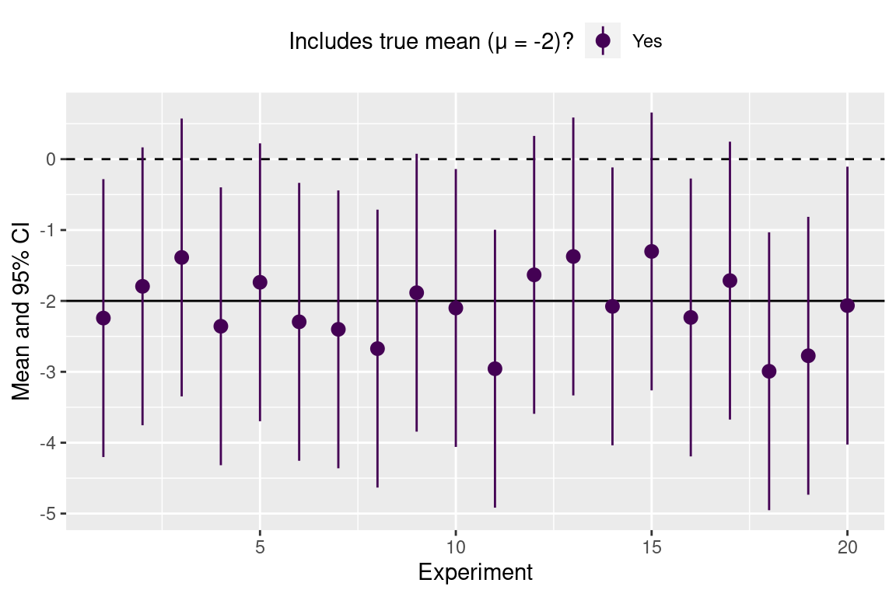
信頼区間内に 0 が含まれるときの、帰無仮説は棄却できません。 ちなみに、このときの帰無仮説は「平均値はゼロ」です。
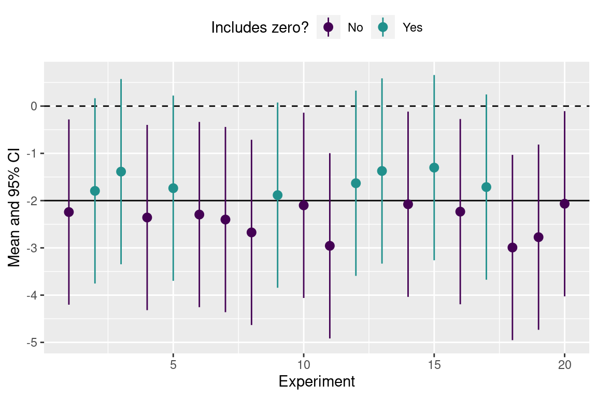
- 真の平均値は -2 なので、仮定した帰無仮説はそもそも誤りです。
- H_0 を棄却しなかったら、 第2種の誤り 10がおきます。
- 8 つの調査の 95% 信頼区間は 0 を含みます。つまり、第2種の誤りは \beta= 8 / 20 = 0.4 (40%) です。
- この解析の検出力 (1 - \beta) は 0.6 です。正しい結果に導く確率は 60% です。
解析は誤りです!
z 値は正規分布に従いますが、このとき母平均と母分散は存知です。
z = \frac{\overline{x} - \mu}{\sigma}\sim N(0,1)
++ところが、一般的には母平均と母分散は未知です。** 一般的には z 値より、t 値を求めます。
t_{\overline{x}} = \frac{\overline{x} - x_0}{s.e.} = \frac{\overline{x} - x_0}{s / \sqrt{n}}
t 値は t 分布に従います。
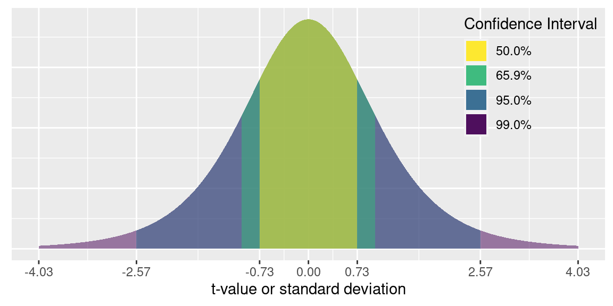
この t 分布の 自由度 11は N-1 = 5 です。
Signififance level | percent | ± quantile |
0.50000000 | 50.00000 | 0.7266868 |
0.36321747 | 63.67825 | 1.0000000 |
0.20000000 | 80.00000 | 1.4758840 |
0.10193948 | 89.80605 | 2.0000000 |
0.10000000 | 90.00000 | 2.0150484 |
0.05000000 | 95.00000 | 2.5705818 |
0.03009925 | 96.99008 | 3.0000000 |
0.02500000 | 97.50000 | 3.1633814 |
0.01032342 | 98.96766 | 4.0000000 |
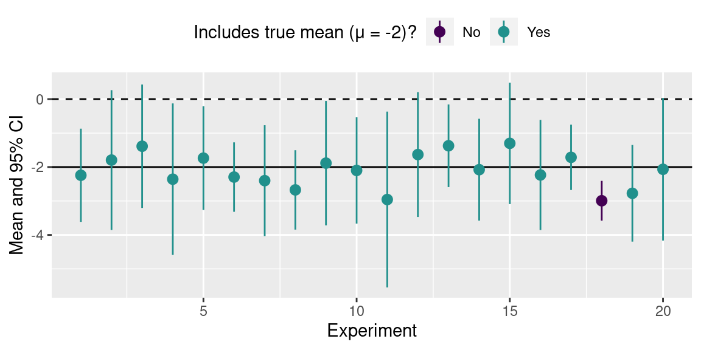
Figure 7 は 20 の標本平均とそれぞれの 95% 信頼区間を示しています。 真の平均値が頼区間に含まれている実験は紫色で示しています。 20 の調査のうち、新の平均値を含む回数は 19 回です。
信頼区間の解釈について
基本的には、95% 信頼区間を次のように理解できる。 実験を 100 回行い、信頼区間内に真の平均値が含まれる回数は 95 回です。。
下記で述べた解釈はすべて誤りです。
- 信頼区間に真の平均値が存在する。
- 95% の確率で真の平均値が信頼区間に含まれる。
- 95% の確率で次の実験の平均値が信頼区間に含まれる。
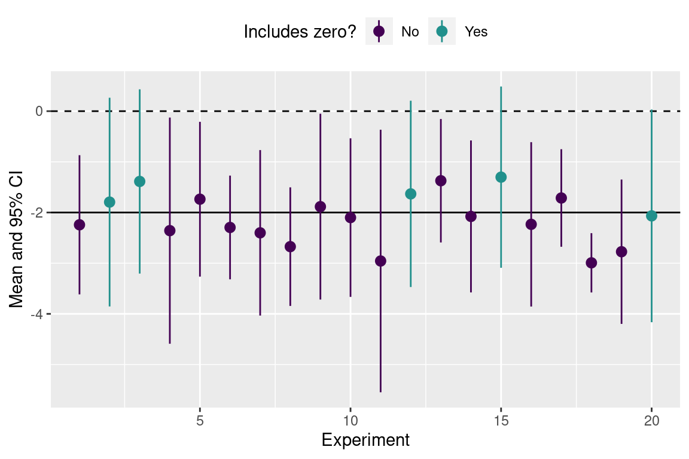
- 信頼区間に 0 を含む実験は 5つあるので、 \beta= 5 / 20 = 0.25 (25%) です。
- この実験の検出力 (1 - \beta) は 0.75 です。
t 検定
対応ありの t 検定
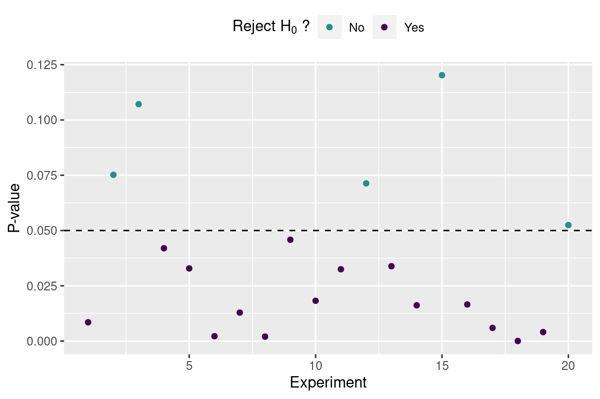
このときの第２種の誤りををこす確率は \beta = 5 / 20 = 25% です。 検出力 (1-\beta) は 0.75です。
分散が異なる t 検定
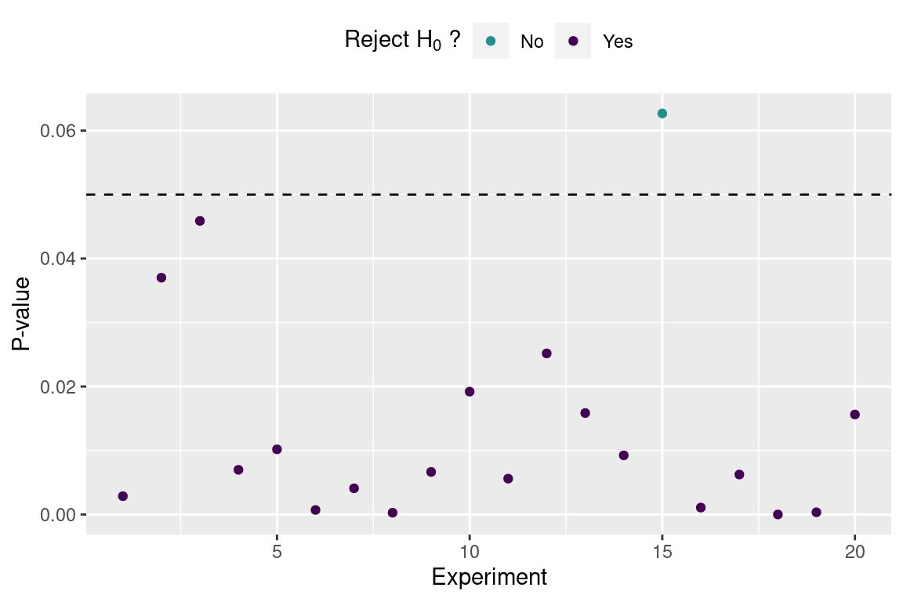
このときの第２種の誤りををこす確率は \beta = 1 / 20 = 5% です。
検出力 (1-\beta) はs 0.95 です。
対応ありの t 検定
対応ありのt検定 (paired t-test)
t 検定の統計量は t 値です。
t^* = \frac{\overline{x}_{A-B} - \mu}{s_{A-B} / \sqrt{n}}
対応ありの t 検定の自由度は n-1 です。
観測値がペアとして対応しているときに使います。 たとえば、低い光環境で育て海藻を高い光環境に移した時の成長速度の差を比較するときに使います。
2標本の t 検定
2標本 （２群）t 検定には 2 種類あります。
等分散の t 検定 (equal variance t-test)
t^* = \frac{\overline{x}_A - \overline{x}_B}{s_p \sqrt{1 / n_A + 1/n_B}} s_p = \sqrt{ \frac{(n_A-1)s_A^2 + (n_B-1)s_B^2} {n_A + n_B -2}} 自由度は n_A + n_B - 2 です。
不等分散の t 検定・ウェルチの t 検定 (Unequal variance, Welch’s t-test)
t^* = \frac{\overline{x}_A - \overline{x}_B}{s_p}
s_p = \sqrt{ \frac{s_A^2}{n_A} + \frac{s_B^2}{n_B}} 自由度はウェルチ–サタスウェイトの式 (Welch-Satterthwaite Equation) で求めます。
s は標準偏差、 n サンプル数、 \overline{x} は平均値、 t^* は t 値。
\text{degrees-of-freedom} = \frac{ \left(\frac{s_A^2}{n_A} + \frac{s_B^2}{n_B}\right)^2 } {\frac{\left(s_A^2 / n_A\right)^2}{n_A-1} + \frac{\left(s_B^2 / n_B\right)^2}{n_B-1}}
degrees-of-freedom は自由度です。
ノコギリモク幼体の幅に対する t 検定
対応ありの t 検定
\begin{aligned} t^* &= \frac{\overline{x}_{A-B} - \mu}{s_{A-B} / \sqrt{n}} \\ t^* &= \frac{-2.467}{2.642 / \sqrt{6}} \\ t^* &= -2.287 \end{aligned}
- \overline{x}_{A-B}= -2.467
- s_{A-B}= 2.642
- \mu=0
- n = 6
- \alpha = 0.05
- t値: -2.287
- P値: 0.071
ノコギリモク幼体のデータはお互いに対応していないので、対応ありの t 検定の結果は誤りです。
ノコギリモク幼体の正しい解析はウェルチの t 検定です。
\begin{aligned} t^* &= \frac{\overline{x}_A -\overline{x}_B}{s_p} \\ s_p &= \sqrt{\frac{s_A^2}{n_A} + \frac{s_B^2}{n_B}} \\ s_p &= \sqrt{\frac{1.995^2}{6} + \frac{1.961^2}{6}} \\ t^* &= \frac{10.05 - 12.517}{1.142} \\ t^* &= -2.16 \\ \text{d.f.} &= 9.997 \end{aligned}
- \alpha = 0.05
- t値-value: -2.16
- P値: 0.056
P\nless \alpha = 0.05 なので、帰無仮説は棄却できません。
サンプル数と p 値の関係
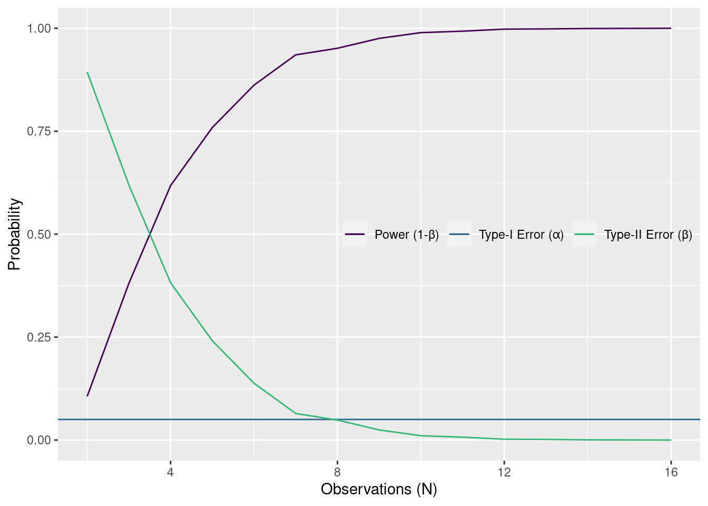
site A の真の平均値は \mu = 20、site B のは \mu = 22 です。 site A の真の平均値は \mu = 20、site B のは \mu = 22 です。 site A と site B の真の標準偏差 (\sigma) は 1 と 1 です。
Behavior of the t-test (unequal variance)
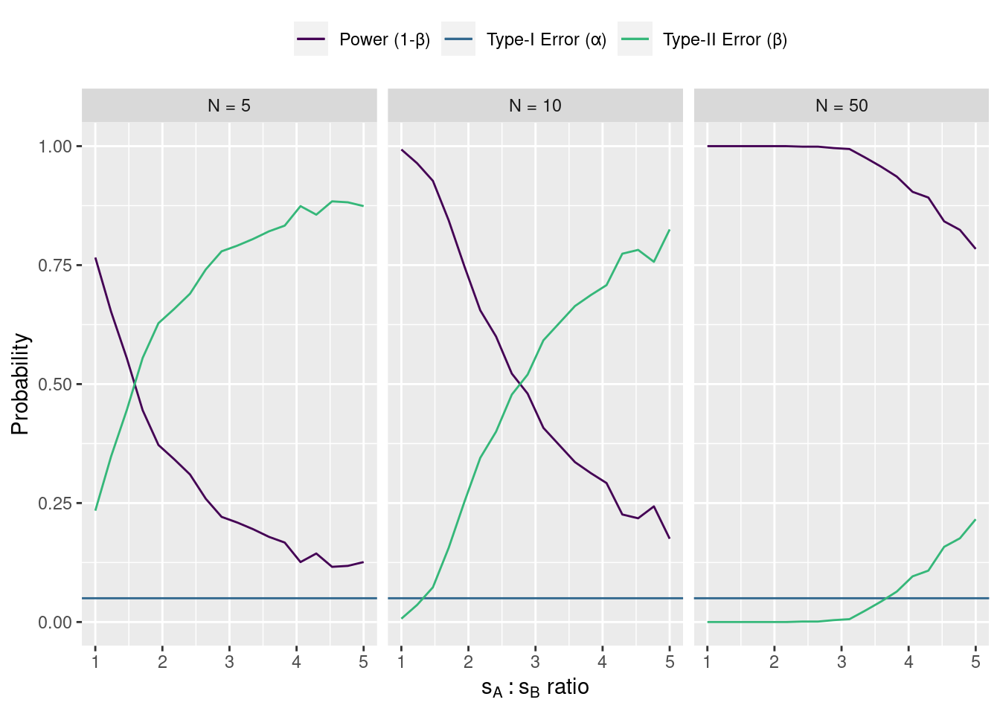
site A の真の平均値は \mu = 20、site B のは \mu = 22 です。 site A の真の標準偏差は \mu = 1、ですが、site B の標準偏差は \sigma_B = k\times\sigma_A です。 s_A / s_B \rightarrow\inftyのとき、第2種の誤りは増加し、検出力は減少します。 さらに、標本数が増えると、不等分散性の影響が下がります。
ウェルチ t 検定の R 出力と結果
Welch Two Sample t-test
data: value by name
t = -2.16, df = 9.9971, p-value = 0.05612
alternative hypothesis: true difference in means between group A and group B is not equal to 0
95 percent confidence interval:
-5.01124979 0.07791646
sample estimates:
mean in group A mean in group B
10.05000 12.51667 # パッケージの読み込み
library(tidyverse)
# 疑似データの作成
A = c(9.8,11.1,10.7,10.7,11.8,6.2)
B = c(12.5,13.8,12.0,15.5,9.8,11.5)
data = tibble(A, B)
data = data %>% pivot_longer(cols = c(A,B))
# ウェルチ t 検定
t.test(value ~ name, data = data)# ひと書き方
t.test(A, B)# two-sample, equal variance t-test (等分散 t 検定)
t.test(value ~ name, data = data, var.equal = TRUE) 分散が異なるの t 検定の解析例
パッケージの読み込み
t 検定だけしたいなら、次のパッケージの読み込みは不要です。 そう言っても、自分のワークフローでは、つぎのパッケージは必ず読み込んでいます。 パッケージを読み込もうとしたときに、 Error in library(tidyverse) : there is no package called 'tidyverse' のようなエラーがでたら、パッケージのインストールが必要です。
パッケージのインストールは次のようにできます。
install.packages("tidyverse")では、パッケージを読み込みます。
library(tidyverse) # データの操作・処理・作図用メタパッケージ
library(readxl) # xlsx ファイルの読み込み用
library(lubridate) # 時刻データ用
Attaching package: 'lubridate'The following objects are masked from 'package:base':
date, intersect, setdiff, unionデータの準備
データは CSV (Comma Separated Value; コンマ区切り) ファイルに保存しています。 ファイルの内容は次の通りです。 最初の 3 行にはファイルの説明があります。
# 6 Sargassum macrocarpum individuals from 2 sites were measured.
# site: is the collection site (A, B).
# size: is the width of the individual in mm.
site,size
A,19.9
A,20.6
A,20.3
A,20.4
A,20.9
A,18.1
B,22.3
B,22.9
B,22
B,23.7
B,20.9
B,21.7では、データを R に読み込みます。
filename = "./_data/sargassum_t-test_dataset.csv"
dset = read_csv(filename)Warning: One or more parsing issues, see `problems()` for detailsRows: 15 Columns: 1
── Column specification ────────────────────────────────────────────────────────
Delimiter: ","
chr (1): # 6 Sargassum macrocarpum individuals from 2 sites were measured.
ℹ Use `spec()` to retrieve the full column specification for this data.
ℹ Specify the column types or set `show_col_types = FALSE` to quiet this message.読み込んだデータの内容を確認しましょう。
dset# A tibble: 15 × 1
`# 6 Sargassum macrocarpum individuals from 2 sites were measured.`
<chr>
1 # site: is the collection site (A, B).
2 # size: is the width of the individual in mm.
3 site,size
4 A,19.9
5 A,20.6
6 A,20.3
7 A,20.4
8 A,20.9
9 A,18.1
10 B,22.3
11 B,22.9
12 B,22
13 B,23.7
14 B,20.9
15 B,21.7 説明があるので、読み込みに失敗しました。 読み込んだデータのクラス (class) は 15 行 1 列の tibble になっています。 2 列あるはずです。 この場合、read_csv() に説明を無視させないといけない。
skip = 3 を read_csv() に渡せば、最初の 3 行をスキップできます。
filename = "./_data/sargassum_t-test_dataset.csv"
dset = read_csv(filename, skip = 3)Rows: 12 Columns: 2
── Column specification ────────────────────────────────────────────────────────
Delimiter: ","
chr (1): site
dbl (1): size
ℹ Use `spec()` to retrieve the full column specification for this data.
ℹ Specify the column types or set `show_col_types = FALSE` to quiet this message.dset# A tibble: 12 × 2
site size
<chr> <dbl>
1 A 19.9
2 A 20.6
3 A 20.3
4 A 20.4
5 A 20.9
6 A 18.1
7 B 22.3
8 B 22.9
9 B 22
10 B 23.7
11 B 20.9
12 B 21.712 行 2 列の tibble になりました。 列1の列名は site 列２の列名は size です。
まずデータの平均値や標準偏差などをもとめる
site ごとの size の平均値、標準偏差、サンプル数、標準誤差は tidyverse パッケージの解析システムをつかいます。
dset |>
group_by(site) |>
summarise(across(size, list(mean = mean, sd = sd, n = length))) |>
mutate(size_se = size_sd / sqrt(size_n))# A tibble: 2 × 5
site size_mean size_sd size_n size_se
<chr> <dbl> <dbl> <int> <dbl>
1 A 20.0 1.00 6 0.410
2 B 22.2 0.971 6 0.396t 検定
t検定は t.test() でやります。
t.test(size ~ site, data = dset)
Welch Two Sample t-test
data: size by site
t = -3.8886, df = 9.9893, p-value = 0.003022
alternative hypothesis: true difference in means between group A and group B is not equal to 0
95 percent confidence interval:
-3.486976 -0.946357
sample estimates:
mean in group A mean in group B
20.03333 22.25000 t.test() の結果をオブジェクトに書き込んだら、t値 (t value)、p値 (p value)、自由度 (degrees of freedom) を抽出できます。
dset_test = t.test(size ~ site, data = dset)
dset_test$statistic # t value t
-3.888623 dset_test$parameter # degrees of freedom df
9.989348 dset_test$p.value # p value[1] 0.003022351結果
ノコギリモクの幼体において、サイト A から採取した幼体の幅（平均値±標準誤差）は 20.03 ± 0.41 mm でしたが、 サイト B から採取した幼体の幅は 22.25 ± 0.40 mm でした。 ｔ検定の結果、両地点で幼体幅間に有意な差がみられた (t(9.99) = -3.889; P = 0.0030)。
有意水準より低いP値は「P < 0.05」のように書くことも有ります。 つまり、「ｔ検定の結果、両地点で幼体幅間に有意な差がみられた (t(9.99) = -3.889; P < 0.05)」。
t検定の結果を記述することが重要です。この 3 つの情報を必ず記述しましょう。
- t(9.99): 検定に使用した自由度（サンプル数の目安）
- -3.889: t検定の統計量
- P = 0.0030: 結果のP値
付録 A: 等分散性と正規性の検定
データの正規性と等分散性の検証も必要であれば Levene Test と Shapiro-Wilk Normality Test があります。 Levene Test は car パッケージの leveneTest() 関数でできますが、Shapiro-Wilk Normality Test はベースR に あるので、 パッケージの読み込みは必要ないです。
等分散性の検定
Levene Test (ルビーン検定) は2群以上の分散の均質性 (homogeneity) を検定するための検定です。 ルビーン検定の帰無仮説は「各群の分散は等しい」です。 有意水準より低いP値を求めたら、帰無仮説を棄却します。 棄却した場合、各群は均一な分散ではありません。
library(car)Loading required package: carData
Attaching package: 'car'The following object is masked from 'package:dplyr':
recodeThe following object is masked from 'package:purrr':
someleveneTest(size ~ site, data = dset)Warning in leveneTest.default(y = y, group = group, ...): group coerced to
factor.Levene's Test for Homogeneity of Variance (center = median)
Df F value Pr(>F)
group 1 0.079 0.7844
10 Warning in leveneTest.default(y = y, group = group, ...): group coerced to
factor.
Warning in leveneTest.default(y = y, group = group, ...): group coerced to
factor.ルビーン検定の統計量は F 値です。 データの等分散性を確認したところ、 F(1,10) = 0.08、 P値は P = 0.7844です。 有意水準より大きいので、帰無仮説を棄却しません。 つまり、等分散性ではないといえません。
正規性の検定
Shapiro-Wilk Normality Test (シャピロ–ウィルク検定) の帰無仮説は「サンプルが正規分布に従う母集団からとれた」です。 つまりシャピロウィルク検定から得たP値はサンプルの正規性を評価する指標です。 帰無仮説検定論の場合、有意水準より低いP値は帰無仮説を棄却することになり、センプルは正規分布に従わない母集団から得たものだと考えられるようになる。
shapiro.test(dset$size)
Shapiro-Wilk normality test
data: dset$size
W = 0.97575, p-value = 0.9608シャピロウィルク検定の統計量は W値です。 W =0.98、 P = ので、 帰無仮説を棄却しません。 正規性に従わないといえません。
一般的な手順のコード
library(tidyverse)
library(car)
filename = "./_data/sargassum_t-test_dataset.csv"
dset = read_csv(filename, skip = 3)
# (1) データの可視化
ggplot(dset) +
geom_point(aes(x = site, y = size)) +
labs(y = "Width (mm)",
x = "Site")
# (2) 等分散性の確認
leveneTest(size ~ site, data = dset)
# (3) 正規性の確認
shapiro.test(dset$size)
# (4) t検定
t.test(size ~ site, data = dset)付録 B: 本資料のデータ作成
資料に使ったデータは次のコードでつくれます。
library(tidyverse)
set.seed(2021)
nA = 6
nB = 6
meanA = 20
meanB = 22
sigmaA = 1
sigmaB = 1
groupA = rnorm(nA, meanA, sigmaA) |> round(digits = 1)
groupB = rnorm(nB, meanB, sigmaB) |> round(digits = 1)
dset = tibble(site = c("A", "B"), size = list(groupA, groupB)) |> unnest(size)
L1 = "# 6 Sargassum macrocarpum individuals from 2 sites were measured."
L2 = "# site: is the collection site (A, B)."
L3 = "# size: is the width of the individual in mm."
fname = "sargassum_t-test_dataset.csv"
write_lines(file = fname, list(L1, L2, L3))
write_csv(dset, file = fname, append = TRUE, col_names = TRUE)